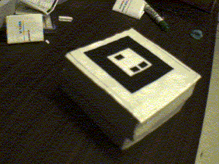
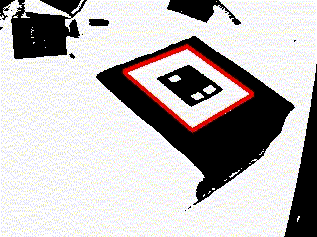
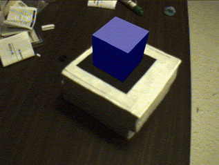

Augmented Reality Interface
The user with the AR interface wears a Virtual i-O iglasses HMD with a small colour camera attached beside one eyepiece. The iglasses are full colour, can be used in either a see-through or occluded mode and have a resolution of 263 x 234 pixels. The camera output is connected to an SGI O2 (R5000SC 180 MHz CPU) computer and the video out of the SGI connected back into the head-mounted display. The computer performs image processing on the camera video image and composites computer graphics on to the video image for display back in the HMD. So the user experiences a video see-through augmented reality, seeing the real world through the video camera.
The user also has a set of cards with square marks drawn on them; one for each remote collaborator (figure 1). When they look at the card for a particular person, computer vision techniques are used to identify the card and determine the exact pose of the head-mounted camera relative to it. Once the position of the real camera is known, a live virtual video image of the remote person can then be exactly overlaid on the card (figure 2). The images are life-sized and can be positioned anywhere in the user's real workspace.
|
||||||||||||||||
|
|
||||||||||||||||
Fig 1. An AR User
|
||||||||||||||||
|
|
||||||||||||||||
Fig 2. The Virtual Participants
Each of the patterns on the cards is unique and surrounded by a black square, so the computer vision algorithm finds these patterns using three steps.
-
The live video image (figure 3) is turned into a binary (black or white) image based on a lighting threshold value.
-
This image is then searched for square regions. Our software finds all the squares in the binary image, many of which are not the tracking patterns (figure 4).
-
Finally, for each square, the pattern inside the square is captured and matched again some pre-trained pattern templates.
If there is a match with a pre-trained template, we have found one of the AR tracking patterns. The square size and pattern orientation can then be used to calculate the position of the real video camera relative to the physical marker. A viewpoint matrix is filled in with the real world co-ordinates of the video camera relative to the card and the same matrix is then used to set the position of the virtual camera co-ordinates; this is the viewpoint from which the computer graphics scene will be drawn. Since the virtual and real camera co-ordinates are the same, the virtual images appear to precisely overlay the real marker (figure 5). Complete details of the camera-tracking method can be found in [12]. It is important to note that this tracking method is fully self-contained and gives complete position and orientation information about the AR users viewpoint, without relying on any external sources. This makes it perfect for mobile or portable applications.
The O2 is used both for the image processing of video from the head-mounted camera and for generating virtual images with a graphics performance speed of 11-15 frames per second. The movie, figure 1, shows the external view of someone using the AR conferencing interface, while figure 2 shows the augmented reality view.

Fig 3. Input Video

Fig 4. Thresholded Video

Fig 5. Virtual Overlay
Shared whiteboards are commonly using in collaborative applications for viewing and annotating on images and documents. We use a virtual shared whiteboard that consists of a larger card with six square tracking markings around the outside (figure 2). Virtual annotations of remote participants and 2-D images can be displayed on it, exactly aligned with the plane of the physical card. We are currently adding support for shared 3-D objects. Like the remote user cards, users can pick up the card for a closer look at the images, and can position it freely within their real workspace.
Since the cards are physical representations of remote participants, our collaborative interface can be viewed as a variant of the popular tangible interface metaphor [13]. A user can arrange the cards about them in space to create a virtual spatial conferencing space and the cards are also small enough to be easily carried, ensuring portability. As the user is no longer tied to the desktop and can potentially conference from any location, the remote collaborators become part of any real world surroundings.
© Copyright British Telecommunications plc 1999